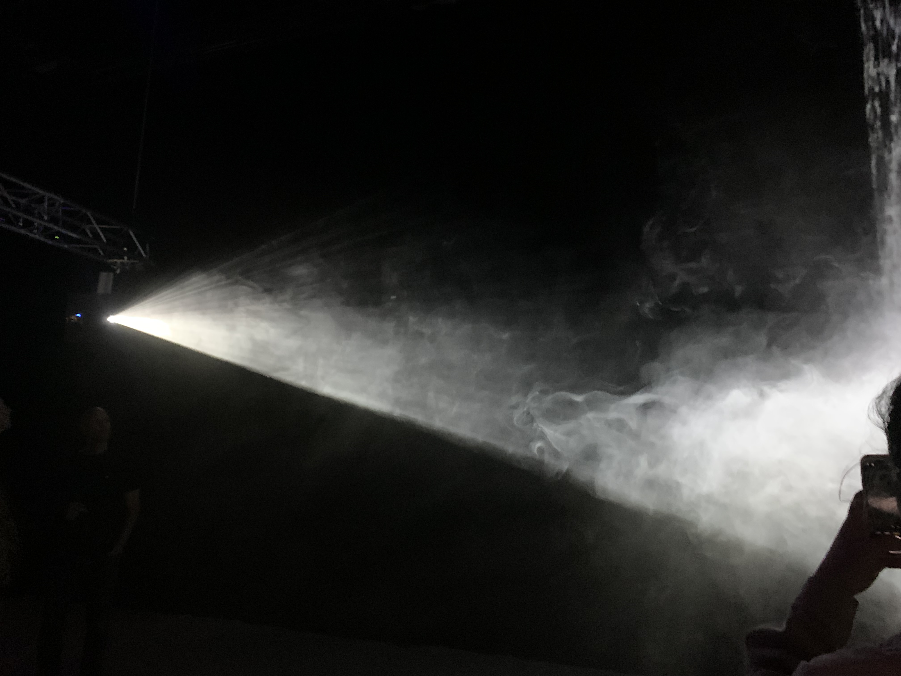
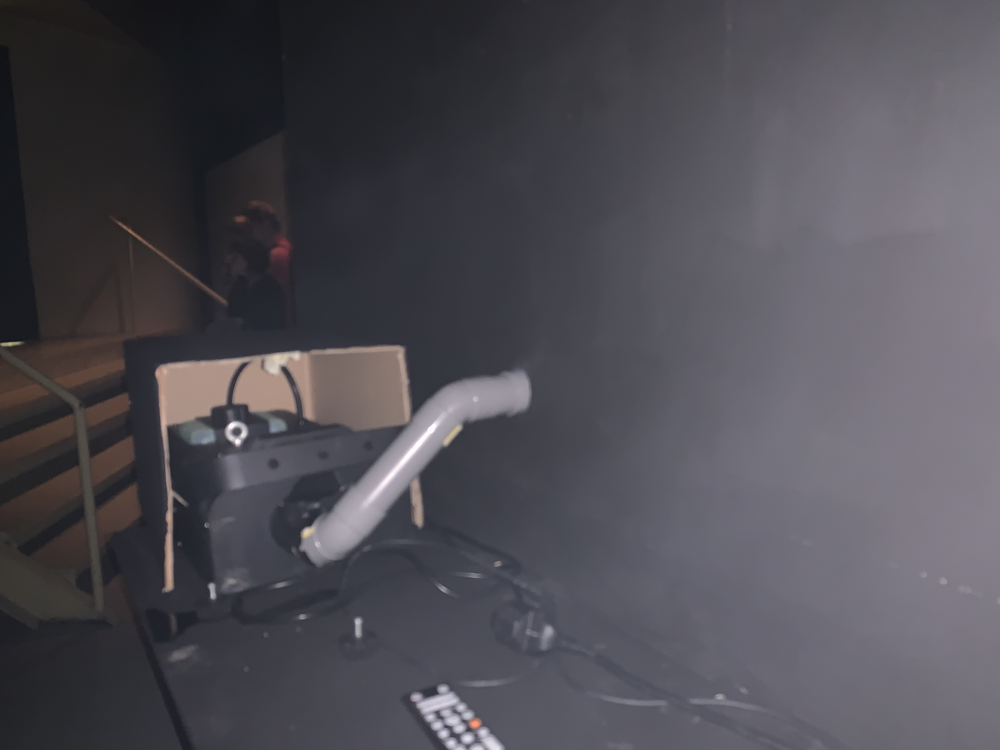
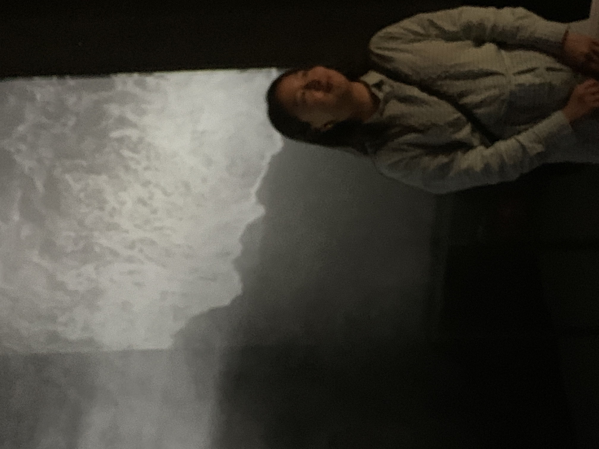

For the excursion, I visited V2 during conflux festival with my other classmates. There were 3 installations in total and I think all three of them has taken more artisitic approach rather than a service/purpose-driven one. However, I still really like the installation called "Drifting towards the unknown" by Carla Chan.
According to the program text that she wrote “The video installation Drifting Towards the Unknown is a meditation on the feeling of drifting aimlessly, of experiencing the loss of direction in your own work or life.” The interaction with the installation is rather straightforward. To be honest, I would call it more as an art piece. Including myself, people who were around the installation would first tried to "touch" or feel the smoke between the projector and the screen and then to observe the smoke movement under the light source from the projector. I'm not sure how the rest of audience feels, but I kind of get the idea of meditation. As the installation was being staged in a complete dark setting, it certainly created a very abstract and sesorial feeling.
In this installation, I don't really see that there were actuators and sensors but just smoke system, projector and a big laser black video screen together with a layer of gauze (not sure with the texture but I found out this is how the smoke came out from the screen).
↑ the form of smoke became more visible with the light source from projector
↑ smoke system behind the screen
↑ myself, video screen at my back (water waves was playing)
In terms of the usage of technology, I personally found it disappointing and not sure if the teachers would be happy with what is being explained here. Although I'd say that I still really like it from an artisitic perspective and I also think that we should not decline its value just because there was less complexity with technology. Instead, it is also time to reflect ourselves of what we could do with the technology or even the equipments that we already own, to create an environment that we would like to show to our audience.
As i can imagine the course would expect us to learn and explore more technological possibilities, I can see that the above excursion might not reach the criteria (although the event is under the suggestion list from blackboard). Therefore, I would like to compensate it with introducing my earlier visit to other museums that was before the HCI course. I have already been to l'Atelier des Lumières in Paris, France (which is the same to Fabrique des lumières in Amsterdam) and Remastered in Rotterdam. I did not take selfie when I was visiting these places, but I can provide ticket proof or photo details from my album if necessary.
As in technology wise, both l'Atelier des Lumières and Remastered apply the same technology. They are both immersive exhibitions that showcase light projections by classical and modern artists, meaning the artworks are no longer only to be showcased in a static space, but an animated light shows. By doing so, first of all, very high-resolution of images and videos are the most basic yet essential requirement. They are then being projected on immersive surface in the venue. As far as I understand, the organization Culturespaces developed this projection technology AMIEX® (Art & Music Immersive Experience). With the technology, it will then allows the projection of artworks onto large immersive surfaces based on video installation and spatialised sound systems. For the exhibition, it has more than a hundred laser video projectors, photos and videos are mapped on the walls, ceiling and floor.
I really like these two exhibitions as it brings such an exciting and immersive experience. I'm impressed by how the experience of visiting museum/art gallery has brought to another level becasuse of the technology and its setting. Back in the day, we could only visit the paintings in museum, which could be preceived as a more boring and static environment. But with the above exhibition, it put audience into a much larger space and you wouldn't have to worry if you touch the artwork and will be warned by the staff or secruity anymore. In fact, the whole experience isn't only about appreciating the artwork, but exactly to encourage people to interact with them.